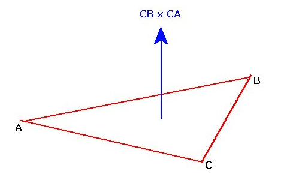
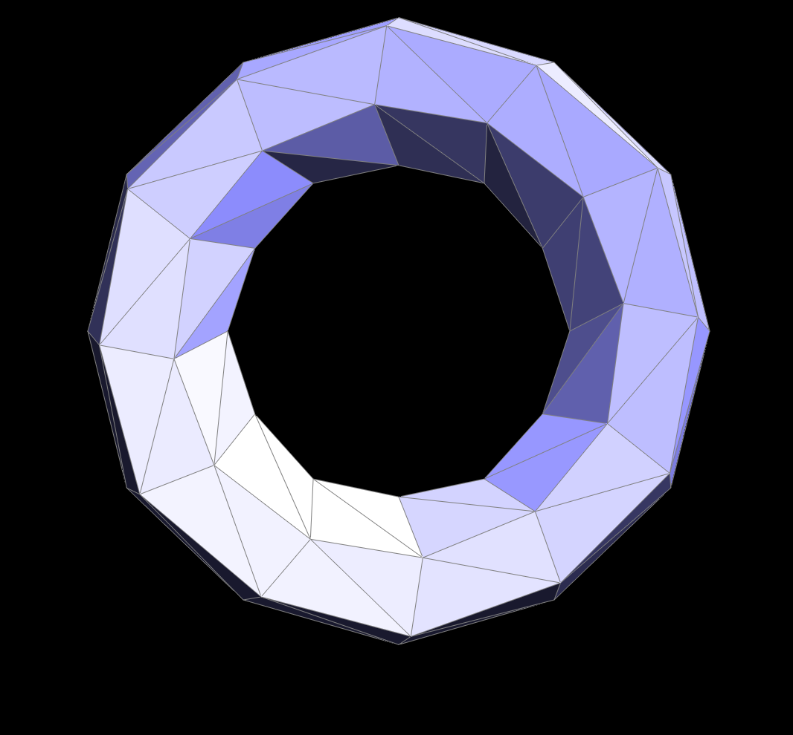

Overview
In this project, I began to venture into the geometric territory of the course. In the first section of the project,
I got to build Bezier Curves and Bezier Surfaces by using de Casteljau's Algorithm. The first section of the project
helped me understand how curves and surfaces can be smoothly generated given a set of scalable points through the help
of linear interpolation (which we used in the previous project and was interesting to see the connection between
the two uses in both projects). In the second part of the project, I learned about the Half-Edge data structure
and how to use it to manipulate half-edge meshes through operations such as flipping and splitting edges. With
the help of the Half-Edge data structure and operations I defined, I was able to implement mesh upsampling with
Loop Subdivision. By the end of this project, I was now able to load and edit mesh files to render
detailed models. This project was very interesting but kept me on my toes because this project required
precise pointer rearrangement so I learned that drawing and planning before writing my code implementation
is an important skill to always practice on projects from this point onward.
Section I: Bezier Curves and Surfaces
Part 1: Bezier curves with 1D de Casteljau subdivision
For the first part of the project, we had to implement de Casteljau’s algorithm for subdivision. What de Casteljau’s
algorithm allows us to do is that given a series of control points, we can now recursively calculate sub divisional
levels of these control points that will ultimately help us evaluate polynomials allowing us to create smooth Bezier Curves. To go into
a bit more detail, at each step of the Bezier Curve evaluation using de Casteljau’s algorithm, we subdivide each line
segment connecting consecutive control points through linear interpolation to a ratio of of t to (t-1) where t is our given sub dividing parameter
which then creates a new set of points. After
each step of the Bezier Curve’s evaluation at t, we end up with one less control point. We recursively repeat this process,
until we end up with one single point. This single point now gives us the point
in the Bezier Curve that is defined by the initial set of control points:
|
de Casteljau Bezier Curve Visualization
|
In order for me to implement de Casteljau’s algorithm for Bezier Curves, I began by first trying to find out what level of
subdivision this current evaluation step was on by counting the number of current control points found in
the most recent addition to evaluatedLevels. If the most
recent addition of evaluatedLevels contains only one control point, then that means that the Bezier Curve has
already been completely evaluated and the function should return immediately. In any other case, I would just
loop through each of the control points in the most recent level index of evaluatedLevels and perform linear
interpolation between each pair of consecutive points using the formula discussed in class which will basically
help us find the midpoint at some position t along the line connecting each pair of consecutive points:
|
One Step of de Casteljau's Algorithm
|
|
Full de Casteljau Formula Execution For Each Point
|
After interpolating the next level of control points, I add this new set of points to evaluatedLevels.
One step of the Bezier Curve's evaluation is now complete and we shall now wait for the next call to
evaluateStep() in order to perform the next step of de Casteljau's algorithm with the newly added set of calculated points.
|
Original 6 Control Points
|
First Step of 6 Point Bezier Curve
|
|
Second Step of 6 Point Bezier Curve
|
Third Step of 6 Point Bezier Curve
|
|
Fourth Step of 6 Point Bezier Curve
|
Final Step of 6 Point Bezier Curve
|
|
Full Bezier Curve Evaluation Animation
|
|
Different Bezier Curve
|
Different Bezier Curve with Different t-value
|
 Manipulating Control Points and t-value of Different Bezier Curve Animation
Manipulating Control Points and t-value of Different Bezier Curve Animation
|
Part 2: Bezier surfaces with separable 1D de Casteljau subdivision
In the previous part of the project, we evaluated Bezier Curves with de Casteljau subdivision.
In this part of the project, we go to the next dimensional level and try to evaluate Bezier
Surfaces. For this part, I had to use the “separable 1D de Casteljau” method for evaluating
Bezier Surfaces. This method involves evaluating four Bezier Curves by using the de
Casteljau algorithm on each curve (similar to the previous part) at parameter u which should result in
us getting four control points (one from each evaluated Bezier Curve). From here, we perform
the de Casteljau algorithm one more time on these newly evaluated set of four control points
at parameter v instead of u. We should now only have one resulting evaluated point on the surface. This
single point now gives us the point in the Bezier Surface that is defined by the initial
set of sixteen control points (four control points for each Bezier Curve):
|
Bezier Surface Evaluation Corresponding to (u,v)
|
 Bezier Surface Evaluation Animation
Bezier Surface Evaluation Animation
|
In order to implement this, I had to iterate the values in the given 2D vector controlPoints
in a very specific manner. controlPoints included sixteen control points, four for each Bezier
Curve. How I traversed controlPoints was that I iterated through each row of controlPoints
(where each row contains the four control points of one Bezier Curve) and evaluated each row
by using my function evaluate1D at position u. In evaluate1D, I performed three steps of the
Bezier Curve’s evaluation at u using de Casteljau's algorithm for subdivision by using linear interpolation between each pair of consecutive
control points at each subdivisional evaluation step. In other words, I applied de Casteljau's algorithm for Bezier Curves
until completion (which should provide us with one interpolated point for that Bezier Curve as a result).
After using evaluate1D for each row of controlPoints,
we are left with four control points (one from each evaluated Bezier Curve). What I did from
here, is that I just used my helper function evaluate1D once more but now with the new set
of four interpolated points and used the parameter v instead of u in order to evaluate
the Bezier Surface. The following illustration helps visually show the amount of linear interpolation
that happens in order to evaluate a Bezier Surface using the separable 1D de Casteljau
algorithm:
|
Separable 1D de Casteljau
|
After implementing Separable 1D de Casteljau, this is my resulting render of a teapot:
Section II: Sampling
Part 3: Average normals for half-edge meshes
For this part of the project, we had to compute normal vectors for vertices
which can ultimately allow us produce more realistic local shading when compared to
that of the default flat shading technique. In order to compute the approximate unit
normal at a vertex, we can go to each neighboring face of the vertex and add the
area-weighted normal of the face (which we can calculate by using the cross product
between two vectors connecting pairs of vertices in the triangle face) until we have
traversed all neighboring faces of the vertex which will then result in the total approximate normal
at this vertex. The picture below gives a visual overview of how I want to calculate
the unit normal (Nfinal) at a vertex by calculating the normal of the vertex’s surrounding
faces:
In my implementation, I started by first finding the halfedge of the original vertex
and getting its position.
Then I used the next() and twin() member functions to traverse and find the other two vertices
in the current triangle face and got each of their positions.
I then calculated two vectors, each
connecting the original vertex with one of the two other vertices in the triangle face by
subtracting the position of each of the two vertices with the position
of the original vertex. In other words, if my original vertex was called C and the other two
vertices in the same triangle face were called A and B, the two vectors I would want to create to perform
cross product are vector CA and vector CB:
|
Calculating Vectors Given Two Points
|
|

Normal Vector Resulting From Cross Product of Two Vectors
|
I then take the cross product between the two previously calculated
vectors of the current face and add this area-weighted normal into
a variable n. I then perform some more next() and twin() actions to move to the next
neighboring face of the original vertex. I repeat this process for every neighboring face of the vertex and add up the cross
products of each face and finally return the re-normalized unit value n.
These are my resulting mesh renderings of dae/teapot/dae :
|
Without Average Vertex Normals
|
With Average Vertex Normals
|
Part 4: Half-edge flip
For this part of the project, we had to implement the “Half-Edge Flip” operation
which basically “flips” an edge through the process of precisely reassigning pointers.
During the flip operation, we select an edge that connects a pair of triangles and
flip the edge such that the edge now connects the two other vertices in the triangles
that orginally did not connect the edge before the flip:
The most difficult part of flipping an edge is trying to keep track of all of the pointers
that need to be reassigned. What really helped me out
with this part of the project was drawing everything out on a piece of paper. I drew
everything that I needed to take into consideration when performing this flip operation, I
drew every vertex, every halfedge, and every face. I drew two illustrations
one for before the flip and another for after the flip. My drawings basically ended up looking like the
following pictures posted on Piazza:
In my implementation, I had to make sure that I was performing only a constant amount of
work, never flipping boundary edges, and not adding or deleting any elements.
I first began by checking whether or not the provided edge e0 was a boundary edge, if
so then we just return the edge immediately and if not then we continue. I then continued
by creating variables for every element I needed to consider when flipping an edge, so I
defined every vertex, halfedge, and face surrounding our provided edge e0. After defining all of the necessary
elements, I then iterated through each of my defined halfedges and used the setNeighbors method
to properly set all of its pointers to its corresponding next, twin, vertex, edge, and face
values based off of the modified mesh after the flip edge. I used setNeighbors for every halfedge I defined even
if a halfedge did not change. Remember that we are not allowed to
add or delete any elements so the "flipped" edge is not actually a newly added edge,
it is the same edge (e0) but the halfedge it points to now points to a new vertex
because of the flip operation.
Then, for each vertex and face that I defined earlier I also made sure
to set each of their halfedge pointers to its most updated halfedge. Because I had drawn
everything out clearly and had planned every reassignment in my drawings beforehand,
I was able to successfully implement the half-edge flip on basically my first attempt, so
I did not get to experience a debugging journey. However, a neat implementation trick that I used to
help me keep track of which halfedge was which and not get confused was by defining each
halfedge with a variable name based off of what vertex that halfedge was from and what
direction they were headed. For example, I gave one halfedge the name b_h which basically
told me that this halfedge’s vertex pointed to a vertex I called “b” and it was going in the regular halfedge
direction. Another halfedge name was b_t which told me that this halfedge’s vertex pointed to
vertex “b” as well but instead this halfedge was headed in the opposite twin direction
of b_h. Giving all of the halfedges names like in the previous example helped me easily
track all of my halfedges during the reassignments during the half-edge flip with less
confusion. Here are some screenshots of a mesh before and after some edge flips:
|
Before Edge Flips
|
After Some Edge Flips
|
 Various Edge Flips Animation
Various Edge Flips Animation
|
Part 5: Half-edge split
For this part of the project, we had to implement the “Half-Edge Split” operation. This operation is more
complicated than edge flipping from the previous part because we have to define new elements (such as new
halfedges, edges, faces, and a new vertex) and the assigning and reassigning of pointers for edge splitting
becomes much more complex as a result. What this operation does is that it splits the edge connecting two
triangles in half by inserting a new vertex at the edge’s midpoint and connects the two opposite vertices (not
the original vertices connecting the original pre-split edge):
Similarly to edge flipping, the most difficult part of implementing edge splitting is keeping track of all
of the pointers since in this part of the project there were many more elements both old and new that you need
to keep an eye on. What helped so much in this part was drawing a picture of the entire process including the
original mesh with all of its elements and drawing another picture of the modified mesh after the edge-split
with all of the new elements and proper reassignments. Everything from halfedges, to edges, to vertices, and
faces and what each of their pointers were reassigned to were properly drawn in the drawings before trying to
implement edge-splitting in code to reduce future confusion:
|
Before Edge-Split
|
After Edge-Split
|
In my implementation, I had to make sure that only a constant amount of work was being performed and that I was
introducing only as many new elements as needed. Similar to the
previous part of the project, I also checked in the very beginning whether or not the provided edge
was a boundary edge or not, if it was then I would return immediately and if not then I would just continue.
The next thing I did in my implementation was create variables
for every element surrounding the edge (e0) which included six halfedges, four vertices, and two faces. I then
defined all of the necessary new element additions needed for edge-splitting including: six new halfedges, three
new edges, two new faces, and one new vertex. In order to calculate my new vertex's position, I averaged the
positions of the two vertices that connected our provided edge e0 (before the edge-split was executed). Then I
began the edge split by beginning to use setNeighbors for every halfedge I defined both old and new. The setNeighbors
method allowed me to properly set all of the pointers for each of the twelve halfedges to its corresponding next
halfedge, twin halfedge, vertex, edge, and face values based on the modified mesh after the edge-split.
I made sure to reassign every element for each halfedge even if none of their pointers changed during the
edge-split. Then I iterated through every original and new vertex, edge, and face that I defined and reassigned
their pointers to each of their most updated halfedge based off of my drawing of edge-split. Because I decided to take the
time and effort to create a clear drawing and planned every necessary reassignment beforehand in my drawings,
I was able to successfully reassign all pointers properly and implement the edge-split upon my first attempt so
I did not happen to go on a grand debugging journey. A possible reason as to why I was able to successfully
implement edge-splitting on my first try is because I used the same variable naming implementation trick for
my elements as in the previous part of the project. This naming scheme helped provide me with information about
what each halfedge’s vertex was and in what direction each halfedge was going. For example, I named one of the
newly added halfedges “m_to_a” which now basically told me that this halfedge’s vertex was the newly added vertex
I called “m” and it was heading in the direction towards a vertex I called “a”. Similarly for edges, I called one
of my newly added edges “edge_m_c” which now informed me that that edge connected vertices named “m” and “c”.
This naming scheme helped me keep better tracking of all my pointers and reduced confusion when having to
reassign pointers during the edge-split. Here are some of my screenshots showcasing a mesh before and after
some edge-splits alongside some edge-flips:
|
Teapot Before Edge Splits
|
Teapot After Some Edge Splits
|
 Various Edge Splits Teapot Animation
Various Edge Splits Teapot Animation
|
|
Bean Before Combination of Edge Splits and Flips
|
Bean After Combination of Edge Splits and Flips
|
 Combination of Edge Splits and Flips Bean Animation
Combination of Edge Splits and Flips Bean Animation
|
Part 6: Loop subdivision for mesh upsampling
For this part of the project, we had to implement Loop Subdivision. The overview of what is happening during
loop subdivision is similar to the idea of upsampling or sampling at a higher rate. Our main goal is to increase
the number of triangles in the mesh using Loop Subdivision but simply splitting each triangle into smaller pieces
does not help with smoothing out more chunky features in the mesh, the same shape is kept for the most part. Loop
Subdivision helps resolve this by instead making it so we interpolate original data in the mesh through updating
vertex positions for vertices in the mesh, splitting all edges in the mesh, and flipping any new edge that touches
a new vertex and an old vertex:
|
Loop Subdivision Visualization
|
The first step for Loop Subdivision is to iterate through all vertices and compute new positions for all of the
vertices in the original mesh using the Loop Subdivision rule where n is the vertex degree and u is a constant
calculated as shown below in the illustration depicting the correct way to get a new vertex position from an old
vertex position using the weighted average of neighboring vertex positions:
|
New Position of an Old Vertex: (1 - n * u) * original_position + u * neighbor_position_sum
|
We then store each vertex’s new position in the vertex’s newPosition member variable to refer to for later. We
also flag each of these vertices as being part of the original mesh inside each vertex’s isNew member variable.
Next, we will begin to iterate through each edge from the original mesh and compute the positions of vertices
that will be inserted at each edge’s midpoint. To find the position of this new vertex that splits an edge AB
with opposite vertices C and D across two faces connected to AB, we use the formula:
3/8 * (A + B) + 1/8 * (C + D)
We store this calculated new position value inside the edge’s newPosition member variable to refer to later. We
also take the time here to flag each of the iterated edges as being part of the original mesh inside each edge’s
isNew member variable. Now it is time to begin splitting every edge in the mesh. In order to make sure that I was
iterating only over edges of the original mesh, I stored the last edge of the original mesh in a variable I called
“edge_before_split”. My for loop then iterated through all of the original mesh’s edges in a for loop until it
reached “edge_before_split” which then now signaled the for loop that any edge observed after were considered new
edges created from edge-splitting thus preventing a never ending for loop. Inside the for loop is where the
edge-splitting is performed. After performing an edge-split operation, we store the new vertex returned by the
edge-split and assign its newPosition member variable to hold the value inside the edge’s newPosition. From here,
we just make sure to flag all new edges created during the edge-split as not being part of the original mesh.
After this, it is now time to flip certain edges. At this point, all vertices and edges should hold a boolean
value inside their isNew member variable flagging whether or not that vertex or edge was part of the original
mesh before the edge-splitting. Using this information, we only iterate all new edges not part of the original
mesh and flip any new edge that connects an old and new vertex. Finally from here, all that is left to do to complete
Loop Subdivision is copy the new vertex positions (found in each vertex’s newPosition member variable we have been
using so far to store the vertex’s new position) into the vertex’s actual position (found in each vertex’s
position member variable).
The hard part about implementing Loop Subdivision was not actually implementing the code but conceptually
understanding what was going on and why. By drawing the process step by step, I was able to understand which
edges were being split and flipped and which edges and vertices were not part of the original mesh. Once I began
understanding Loop Subdivision, I used some similar implementation tricks I used in previous parts of the project
to help me organize my thoughts from my drawings to code. I used helpful variable names such as “m_to_c” to
denote edges that connected the newly created vertex “m” from edge splitting with the vertex named “c”. These
names also helped identify whether an edge or vertex was new or old, which in the latter half of Loop Subdivision
became really useful to guarantee I was interpolating the correct elements and reduce confusion. Because of my
drawings and helpful implementation tricks (and the helpful instructions found in the spec and student_code file),
I was able to successfully implement Loop Subdivision on my first attempt. Below are some screenshots of
renders with and without Loop Subdivision:
|
Original Icosahedron
|
Icosahedron: One Iteration of Loop Subdivision
|
|
Icosahedron: Two Iterations of Loop Subdivision
|
Icosahedron: Three Iterations of Loop Subdivision
|
|
Original Torus
|

Torus: One Iteration of Loop Subdivision
|
|
Torus: Two Iterations of Loop Subdivision
|
Torus: Three Iterations of Loop Subdivision
|
|
Original Cube
|
Cube: One Iteration of Loop Subdivision
|
|
Cube: Two Iterations of Loop Subdivision
|
Cube: Three Iterations of Loop Subdivision
|
Based on my observations from the renders above, we can see that sharp corners and edges begin to smoothen out
and round in shape after each iteration of loop subdivision instead of maintaining their sharp corner figure.
However, there is a way to lessen this effect and keep sharp corners and edges sharp. Through some experimentation,
it became apparent that through some careful pre-splitting of certain edges, we can lessen the smoothing effect of
sharp corners and edges by pre-splitting edges various times that are close to the vertex where the sharp corner/edge
is found. For example, let us look at dae/cube.dae. Each face of the cube contains four sharp edges.
Let us look at one sharp corner in particular and begin to pre-split edges around that sharp corner. When we split
more and more edges the closer we get to the sharp corner, it is as if we are giving our loop subdivision upsampling
scheme more samples to consider near the sharp corner. With more samples in the corner, we are making it so when we
increase the number of triangles in the mesh after an iteration of Loop Subdivision, the new positions of the vertices
in that corner area will begin to round with the positions of their neighbors which are still near the corner as
well thus causing the corner to maintain its shape and reducing the effect of smoothing sharp corners:
|
Pre-Split Cube
|
Pre-Split Cube: One Iteration of Loop Subdivision
|
|
Pre-Split Cube: Two Iterations of Loop Subdivision
|
Pre-Split Cube: Three Iterations of Loop Subdivision
|
As we can see in earlier original renders of dae/cube.dae, the cube becomes slightly asymmetric after several
iterations of Loop Subdivision. I observed the cube for some time and eventually saw that the diagonal edges
of each face of the cube were not all facing in the same direction. Because of this inconsistency in diagonal
edge orientation, some sharp corners shared more than one diagonal edge from various faces of the cube and other
corners were connected to just one diagonal edge and as a result some corners in the cube ended up becoming
smoother than others after several iterations of Loop Subdivision causing the asymmetric effect we see in the
renders. After some experimentation with flip and split operations on the cube, I was eventually able to have
the cube subdivide symmetrically. By splitting each diagonal on each of the six faces of the cube, each of the
faces of the cube now looks identical (each contains four triangles) and each corner of the cube now shared an
equal amount of diagonal edges thus causing a balance in the cube. Now when I perform several iterations of Loop
Subdivision, the cube now becomes a more symmetric mesh:
|
Symmetric Cube
|
Symmetric Cube: One Iteration of Loop Subdivision
|
|
Symmetric Cube: Two Iterations of Loop Subdivision
|
Symmetric Cube: Three Iterations of Loop Subdivision
|
Compare the Asymmetric Cube with the pre-processed Symmetric Cube:
|
Asymmetric Cube Animation
|
Symmetric Cube Animation
|